Java™ 11 Support
- The Eclipse compiler for Java (ECJ) implements the new Java 11 language enhancements.
- For an informal list of examples of Java 11 features, please have a look here.
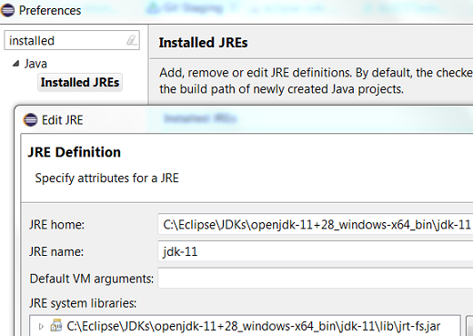
An option to set compiler compliance to 11 on a Java project is also provided.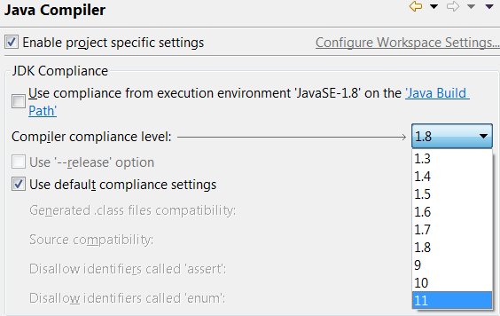
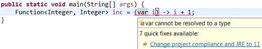
var type to lambda parameters.
This quick assist is only available if the project compliance is Java 11 or above.
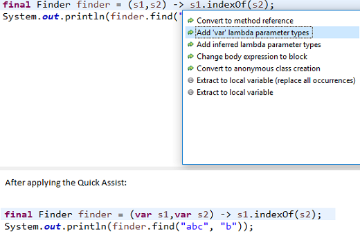
var.
This quick assist is only available if the project compliance is Java 11 or above.
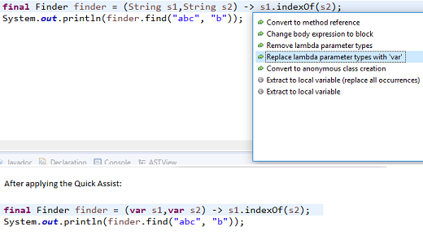
var with inferred lambda parameter types.
This quick assist is only available if the project compliance is Java 11 or above.
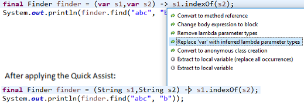
Java Editor
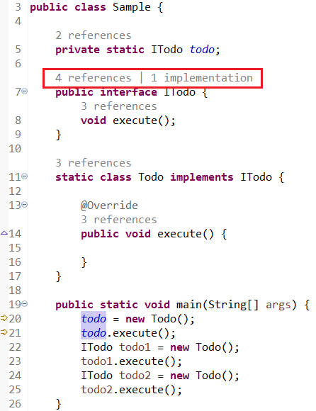
-
This feature can be enabled in Preferences > Java > Editor > Code Minings:
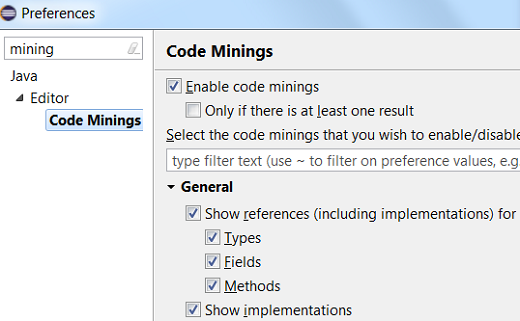
-
The reference count includes the implementation count.
-
Clicking on references launches the search for references:
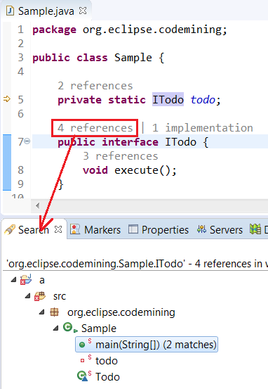
-
Clicking on implementations opens the Type Hierarchy view:
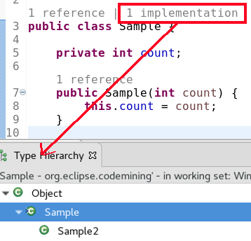
-
This is implemented using the Code Mining extension-point.
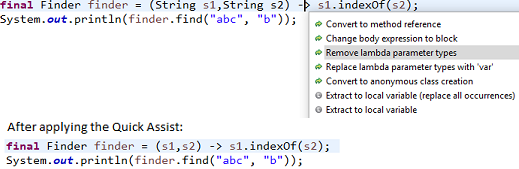
var has been provided.
This option is only available if the project compliance is Java 10 or above.
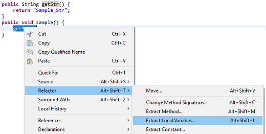
When you select the highlighted option, the local variable type will be of type var.
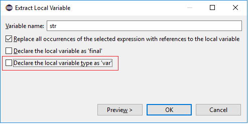
Result:
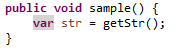
module-info.java file now offers a new template for the creation of a module declaration.
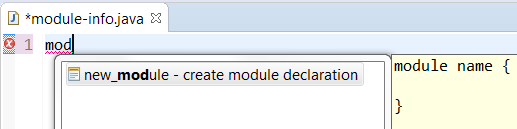
Java Views and Dialogs
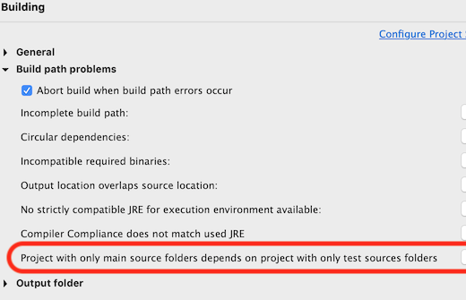
A quick fix Configure problem severity that opens this settings page is now offered for configurable build path problems reported in the problems view.
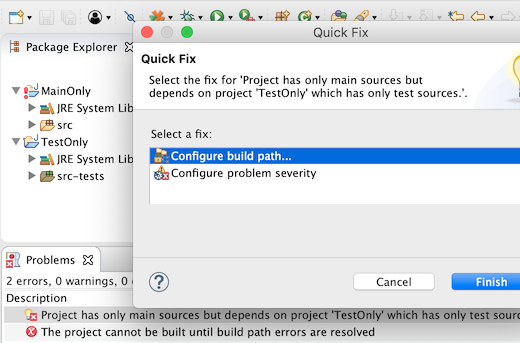
When this preference is selected, the pre-defined trigger characters to insert a completion proposal will be ignored while typing. Here, the proposal can be inserted by pressing Enter.
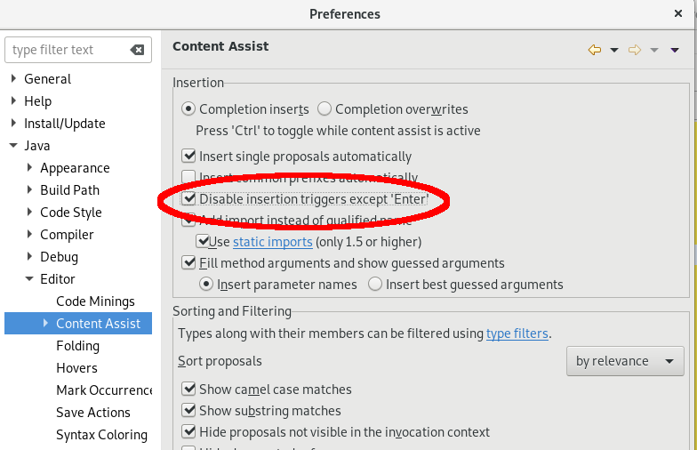
Disabling insertion triggers is usually convenient to avoid insertion of undesired proposals when the content assist pop-up is shown too often. For example, when too many characters are used as triggers for auto activation of code assist.

When you select this action on a Java 8 (or below) project and if a JRE with version 9 or above is present in the workspace, then the following dialog appears.

The highest available JRE is selected and the compliance setting for the project is also updated accordingly. After this the Create module-info.java dialog opens.
Java Formatter
While previously there was only one setting for empty code blocks, now there are separate settings for loops, 'if then' statements and lambdas.
A special option to keep 'return' or 'throw' clause on one line in 'if then' statements is still available. Similarly, there's a new specific setting for simple getters and setters.
The settings can be found under New Lines > Keep braced code on one line in the Profile Editor (Preferences > Java > Code Style > Formatter > Edit...).
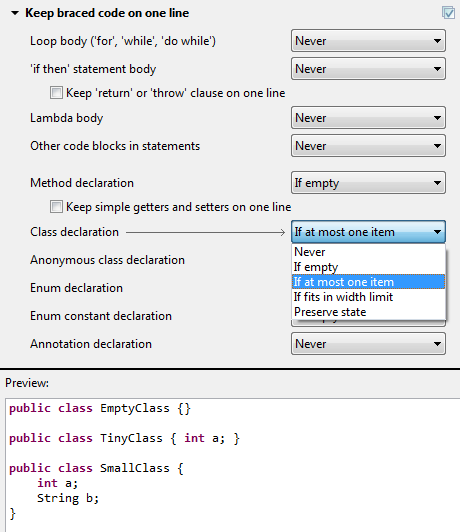
JUnit
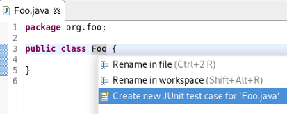
JDT Developers
true, the JDT builder will use null
as the scheduling rule instead of the workspace root. The preference can be changed using the Preferences APIs, or by editing
the plugin_customization.ini file of your application.
This prevents the Java builder from locking the whole workspace. The user can continue to work in parallel and other builders can also run in parallel, which results in faster builds and faster UI feedback.
As of 4.10, this is considered as an experimental feature and is introduced mainly for testing purposes.